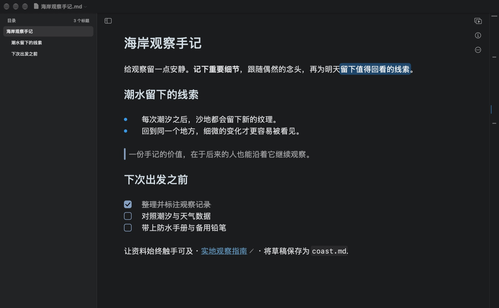
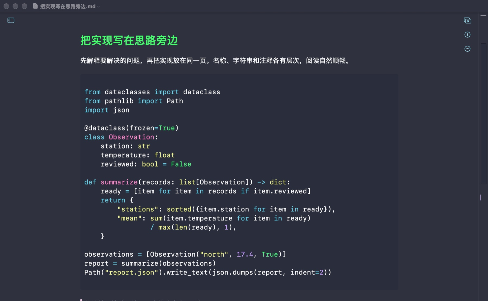
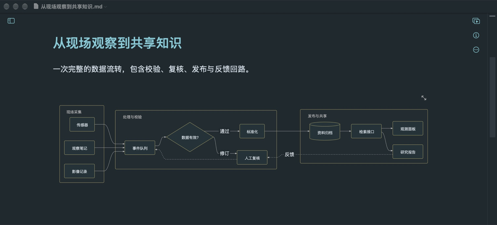
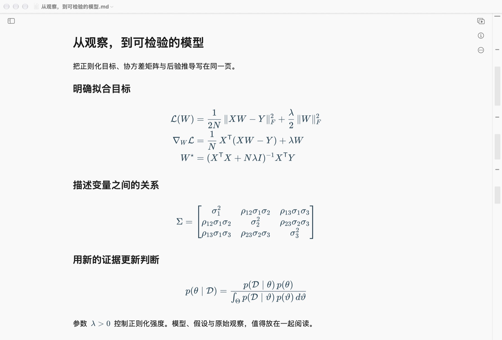
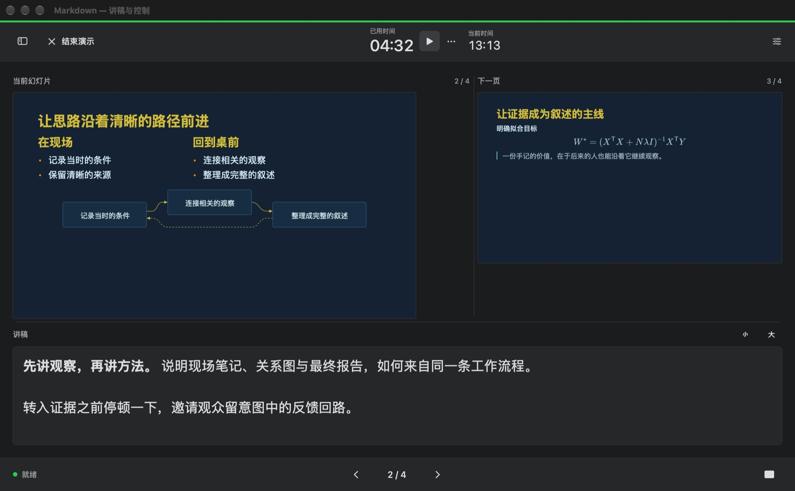

随时找回思路
用目录跳转章节，用缩略导航定位长文，再用查找与替换统一修改。
在 Mac 上，给想法一个自然的落点
用文字展开观点，用图表连接思路，用公式写清推导。准备分享时，让同一份文稿走上讲台。
macOS 14 或更新版本 · 正在准备于 Mac App Store 上线

让完整的想法留在一页里
从第一行提纲到完整的技术方案，把文字与论证放在一起。标题、表格、待办清单和代码，在输入时自然成形。
代码按语言高亮，说明紧挨着实现。把技术方案、排查过程和教程，写得更好读。

用 Mermaid 描述分组、分支和反馈回路。改动源文稿，图表也随之更新。

行内数学融入句子，多行公式逐步展开。矩阵、积分与推导，清晰呈现在文稿里。

用目录跳转章节，用缩略导航定位长文，再用查找与替换统一修改。
打开普通 Markdown 文件，保存在你选择的文件夹。核心编辑无需注册账号。
免费导出 PDF、HTML、Markdown 与纯文本；Pro 提供更多交付格式。
写好的内容，接着讲给大家听
用分页标记组织幻灯片，在文稿旁预览，准备好就全屏演示。Pro 再把讲稿、下一页和计时放到独立的演讲者视图里。

免费开始，按需要升级
核心功能免费
一次性购买 · 支持家庭共享
在 App 内购买，确认前由 App Store 显示你所在地区的价格。无需按月或按年订阅。
遇到问题，我们在这里
有关文稿、导出或购买的问题，请发邮件联系开发者，并注明 macOS 版本、App 版本和问题出现的步骤。只发送你愿意分享的示例文件。
entropysniper@gmail.com
打开 Mac 上的 .md 文件，或在 App 中新建文稿，再保存到你选择的文件夹。如果文件夹或附件无法访问，请检查文件位置，并在 macOS 提示时授予访问权限。重要文稿请保留备份。
在 Mac App Store 登录购买时使用的 Apple 账户。打开 Markdown，前往“设置 → Pro”，选择“恢复购买”。请保持联网，并完成 Apple 的登录提示。如果仍未恢复，请将错误信息发送给支持邮箱。
Markdown Pro 是一次性、非消耗型 App 内购买，已启用家庭共享。符合条件的家庭成员可通过 Apple 的家庭共享设置使用此购买。实际价格与购买条款会在付款前由 App Store 显示。
本地写作和已保存在本地的内容可以离线使用。远程图片、链接预览、购买与恢复购买可能需要联网。如果文稿放在其他云服务的文件夹中，文件是否可用取决于该服务。
文稿导出 PDF 属于免费功能。将整套幻灯片导出为 PDF 或 PowerPoint 需要 Pro；Pro 还提供 Word、RTF、ePub、图片与 TextBundle 等导出格式。
App Store 付款由 Apple 处理。对于不明扣款或退款申请，请使用 Apple 的“报告问题”服务。开发者无法查看你的银行卡资料或 Apple 账户密码。
你的文稿，由你掌握
更新于 2026 年 11 月 7 日
本政策适用于 Markdown macOS App 及本产品网站。如有隐私或使用支持问题，可通过 entropysniper@gmail.com 联系开发者。
Markdown 在 Mac 上打开和保存你选择的文件。开发者不会收到你的文稿、文件名、写作活动或编辑偏好。App 无需注册账号，也没有广告服务或分析 SDK。如果你将文件放入独立的同步文件夹，相应服务会按照其自身设置与政策处理这些文件。
包含远程图片或链接预览的文稿可能直接连接相应网站。该网站会收到请求，其中可能包含 IP 地址等网络信息，并按其自身隐私政策处理。打开网页链接时，也会访问相应的外部服务。
Apple 通过 App Store 处理购买与恢复。Markdown 在设备上使用 StoreKit 验证 Pro 权益，并保存维持权益所需的本地购买信息。开发者不会收到你的银行卡资料或 Apple 账户密码。
你通过邮件联系支持时，开发者会收到你的邮箱、邮件内容以及你主动添加的附件，并使用这些信息回复请求。如需处理你已经发送的信息，请联系同一邮箱。
本网站不使用广告、分析脚本或追踪 Cookie，由 GitHub Pages 托管。GitHub 会出于安全目的记录访问者的 IP 地址，并按照其隐私声明处理托管相关信息。
GitHub 隐私声明 ↗你可以自行选择打开哪些文稿，以及在哪里保存、复制或删除文件。卸载 App 不会删除你保存在其他位置的文件。本政策如有变更，将在本页发布并更新日期。